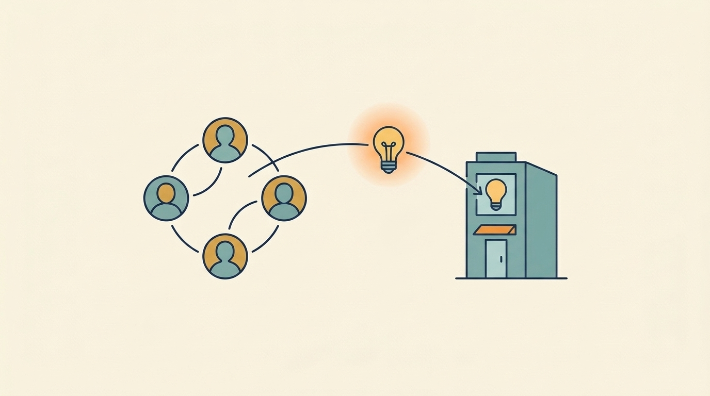

Part III — COLLABORATE: Get Useful Help From Your Investors
Learn Through Your Investor’s Network: Knowledge, Peers and New Perspectives

Image generated by Google Gemini (gemini-3-pro-image-preview)
Part III — COLLABORATE: Get Useful Help From Your Investors

Image generated by Google Gemini (gemini-3-pro-image-preview)